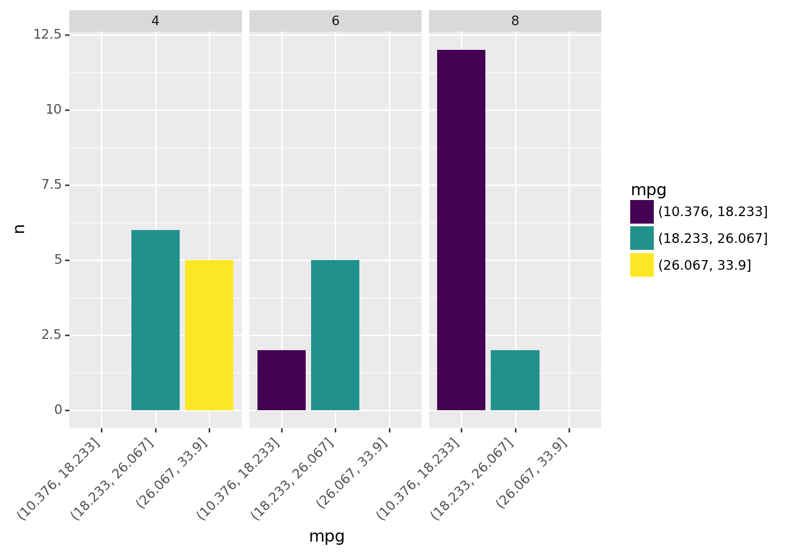

import pandas as pd
from siuba import _, count, separate, complete
from siuba.data import mtcars, penguinsHelpers: count, separate, complete
Some combinations of verbs and column operations get used so frequently that they earn their own helper verbs. These helpers make things a little quicker or concise to type.
This page discusses 3 helper functions that will super charge your workflow:
count(): tally up values in the data.separate(): split a string column into separate columns (e.g. “a-1” -> “a” and “1”).complete(): expand and enhance data with all combinations of specific columns.
Count values
Use count() to quickly tally up the number of rows per grouping.
mtcars >> count(_.cyl, _.gear)| cyl | gear | n | |
|---|---|---|---|
| 0 | 4 | 3 | 1 |
| 1 | 4 | 4 | 8 |
| ... | ... | ... | ... |
| 6 | 8 | 3 | 12 |
| 7 | 8 | 5 | 2 |
8 rows × 3 columns
The output above has 8 rows—one for each grouping—and a column named n with the number of observations in each grouping.
Note that count() is a shorthand for combining group_by() and summarize().
from siuba import group_by, summarize
mtcars >> group_by(_.cyl, _.gear) >> summarize(n = _.shape[0])| cyl | gear | n | |
|---|---|---|---|
| 0 | 4 | 3 | 1 |
| 1 | 4 | 4 | 8 |
| ... | ... | ... | ... |
| 6 | 8 | 3 | 12 |
| 7 | 8 | 5 | 2 |
8 rows × 3 columns
Sorting results
Use the sort argument to sort results by number of observations, in descending order.
mtcars >> count(_.cyl, sort=True)| cyl | n | |
|---|---|---|
| 0 | 8 | 14 |
| 1 | 4 | 11 |
| 2 | 6 | 7 |
With expressions
mtcars >> count(_.cyl, high_mpg = _.mpg > 30)| cyl | high_mpg | n | |
|---|---|---|---|
| 0 | 4 | False | 7 |
| 1 | 4 | True | 4 |
| 2 | 6 | False | 7 |
| 3 | 8 | False | 14 |
Here’s a somewhat advanced example that puts mpg in different bins.
from siuba import count
from siuba.siu import call
from siuba.data import mtcars
car_counts = mtcars >> count(_.cyl, mpg = call(pd.cut, _.mpg, bins = 3))
car_counts| cyl | mpg | n | |
|---|---|---|---|
| 0 | 4 | (10.376, 18.233] | 0 |
| 1 | 4 | (18.233, 26.067] | 6 |
| ... | ... | ... | ... |
| 7 | 8 | (18.233, 26.067] | 2 |
| 8 | 8 | (26.067, 33.9] | 0 |
9 rows × 3 columns
Note these important pieces:
call(pd.cut, ...)is used to lazily callpd.cut(...).pd.cutsplits the data into bins, that count then uses as a grouping.
Here’s a barchart of this data in plotnine.
from plotnine import ggplot, aes, geom_col, facet_wrap, theme, element_text
(car_counts
>> ggplot(aes("mpg", "n", fill="mpg"))
+ geom_col()
+ facet_wrap("~cyl")
+ theme(axis_text_x = element_text(angle=45, hjust=1))
)
<ggplot: (8789522236912)>As vehicles increase in cylinders, they have fewer low mpg vehicles. For example, no 8 cylinder vehicles are in the highest mpg bin (above 26 mpg).
Weighted counts
Use the wt argument to do a weighted count (i.e. sum the weight values per grouping).
This is useful if you have data that already contains a count, such as the count of cyl and gear below.
tbl_n_cyl_gear = mtcars >> count(_.cyl, _.gear)The wt argument lets us roll this result up to count observations per cyl.
tbl_n_cyl_gear >> count(_.cyl, wt=_.n)| cyl | nn | |
|---|---|---|
| 0 | 4 | 11 |
| 1 | 6 | 7 |
| 2 | 8 | 14 |
Notice that this is equivalent to counting cyl on the raw data.
mtcars >> count(_.cyl)| cyl | n | |
|---|---|---|
| 0 | 4 | 11 |
| 1 | 6 | 7 |
| 2 | 8 | 14 |
Separate strings into columns
Use separate() to split a column using a pattern, and produce new columns.
By default, it splits strings on any non-alphanumeric character, so is helpful for quickly splitting in common situations where values are seperated by dashes (e.g. “a-1”).
For example, here is some data where the condition column could be split on "-".
measures = pd.DataFrame({
"condition": ["a-1", "a-2", "b-1", "b-2"],
"value": [1, 2, 3, 4]
})
measures| condition | value | |
|---|---|---|
| 0 | a-1 | 1 |
| 1 | a-2 | 2 |
| 2 | b-1 | 3 |
| 3 | b-2 | 4 |
Separate takes the column we want to split, the names of the new columns. It produces a new table with the new columns in the place of the old one.
measures >> separate(_.condition, ["name", "number"])| value | name | number | |
|---|---|---|---|
| 0 | 1 | a | 1 |
| 1 | 2 | a | 2 |
| 2 | 3 | b | 1 |
| 3 | 4 | b | 2 |
Notice that the condition column got split into name and number columns.
Complete combinations of data
Use complete() to fill in missing combinations in the data.
For example, the code below counts penguins across species and island, but not all species are on each island.
tbl_n_penguins = penguins >> count(_.species, _.island)
tbl_n_penguins| species | island | n | |
|---|---|---|---|
| 0 | Adelie | Biscoe | 44 |
| 1 | Adelie | Dream | 56 |
| 2 | Adelie | Torgersen | 52 |
| 3 | Chinstrap | Dream | 68 |
| 4 | Gentoo | Biscoe | 124 |
Notice the following in the count:
- Adelie penguins are on three islands, BUT
- Chinstrap are only on Dream.
- Gentoo are only on Biscoe.
We can use complete to add rows with 0 counts for islands Chinstrap and Gentoo aren’t on.
tbl_n_penguins >> complete(_.species, _.island, fill = {"n": 0})| species | island | n | |
|---|---|---|---|
| 0 | Adelie | Biscoe | 44.0 |
| 1 | Adelie | Dream | 56.0 |
| ... | ... | ... | ... |
| 7 | Gentoo | Dream | 0.0 |
| 8 | Gentoo | Torgersen | 0.0 |
9 rows × 3 columns
Now the data has 9 rows, one for each combination of species and island. The fill = {"n": 0} argument allowed us to set a default value of 0 for the previously missing rows.